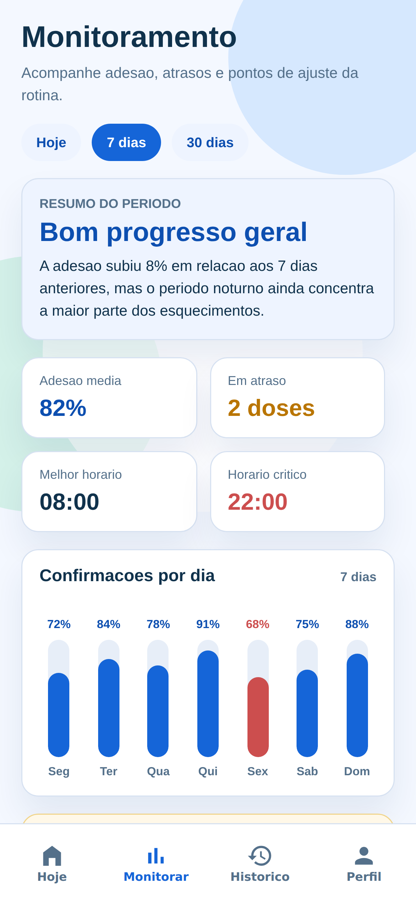
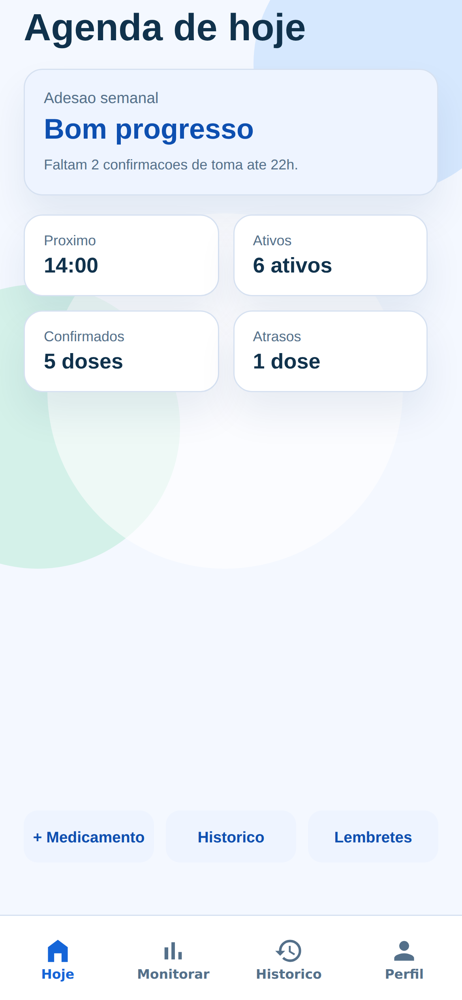

Tecnologia para uma rotina medicamentosa mais simples, organizada e segura.


Cadastro e organização dos tratamentos.
Horários e duração do tratamento.
Registro de doses e histórico.
Interação conversacional com a plataforma.
Titulares poderão solicitar:
AcessoCorreçãoExclusãoRevogação do consentimentoResponsáveis definidos por tecnologia, dados e segurança.
Tecnologia apoiando estabilidade, segurança, experiência e crescimento.
Custo, segurança, disponibilidade e dependência de fornecedores.
Disponibilidade, erros, integrações e funcionalidades críticas.
LGPD, segurança e controle de acesso.
Experiência simples e acessível, especialmente para idosos e cuidadores.
| Risco | OWASP Top 10 | Controle | |
|---|---|---|---|
| Acesso indevido | A01 · Broken Access Control | arrow_forward | shield_lockSupabase Auth + Row Level Security |
| Falhas de autenticação | A07 · Identification and Authentication Failures | arrow_forward | keyAutenticação individual e sessão segura |
| Configuração incorreta | A05 · Security Misconfiguration | arrow_forward | fact_checkRevisão periódica de políticas RLS e permissões |
| Entradas maliciosas | A03 · Injection | arrow_forward | filter_altValidação e sanitização das entradas |
| Exposição de credenciais | A02 / A05 | arrow_forward | key_offSecrets em variáveis de ambiente, nunca no GitHub |
| Dependências vulneráveis | A06 · Vulnerable and Outdated Components | arrow_forward | updateAtualização e análise periódica |
| Falhas de monitoramento | A09 · Security Logging and Monitoring Failures | arrow_forward | monitor_heartLogs e monitoramento de eventos críticos |
As medidas seguem os princípios da família ISO 27000.
Os logs não devem armazenar desnecessariamente medicamentos, informações de saúde ou credenciais.
Uma plataforma que evolui não apenas em funcionalidades, mas também em segurança, privacidade e governança.
Tecnologia, dados e produto trabalhando sobre o mesmo objetivo.
Estrutura técnica, regras de negócio, integrações e modelagem.
Interfaces, estrutura web e apoio às automações do projeto.
Estratégia analítica, indicadores, dados e visão de desempenho.
Participação no projeto Vitalis.